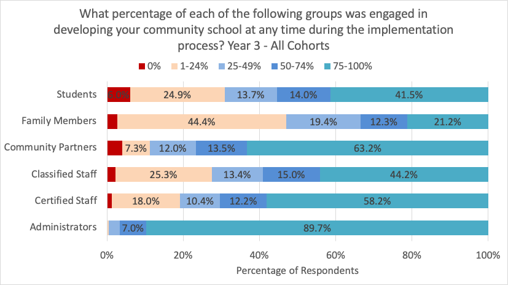
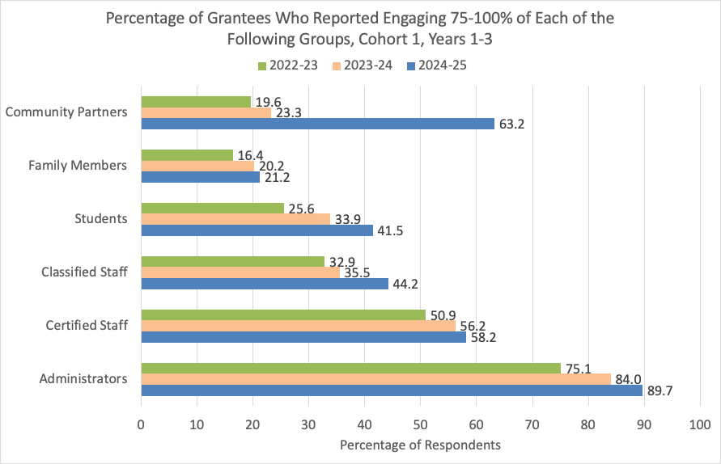
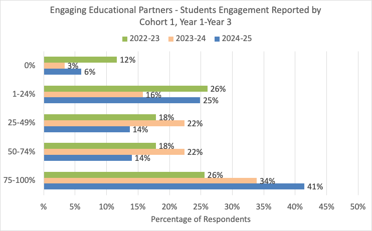
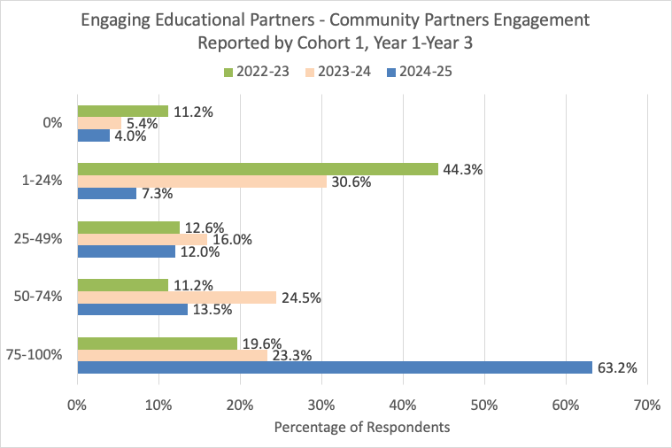

Engaging Educational Partners
Overview of Engaging Educational Partners in Year 3
Analysis of Year 3 APR data indicates that schools were most successful in engaging administrators (89.7% at 75-100% engagement rate), certified staff (58.2% at 75-100% engagement rate), and classified staff (44.2% at 75-100% engagement rate). More than 60% of respondents also reported engaging 75-100% of community partners. Despite 6% of grantees indicate a 0% engagement rate of students, longitudinal trends of Y1 through Y3 showed that students engaged at 0% has dropped to the lowest in Year 3 from previous two years (see below).

For Internal Use only, some of these groups are very high in NA’s, which means many respondents did not fill it out. This is something our recent revisions (e.g., removed Community Members as a reporting category; added the definition of Community Partners) can help address in the upcoming year.
| Stakeholder Group | 0% | 1-24% | 25-49% | 50-74% | 75-100% | NA |
|---|---|---|---|---|---|---|
| Administrators | 2 | 6 | 53 | 130 | 1664 | 64 |
| Certified Staff | 22 | 325 | 189 | 221 | 1052 | 110 |
| Classified Staff | 39 | 457 | 241 | 270 | 797 | 115 |
| Community Members | 386 | 560 | 17 | 4 | 9 | 943 |
| Community Partners | 52 | 95 | 157 | 177 | 827 | 661 |
| Family Members | 45 | 761 | 333 | 210 | 364 | 206 |
| Students | 104 | 431 | 237 | 243 | 719 | 185 |
Engaging Educational Partners: Y1-Y3 Trends
In Cohort 1 schools, we see steady increases in the percentage of grantees that reported engaging each group of stakeholders at 75-100% each year. Year 3 APR shows particularly enhanced engagement of community partners, which increased by 40 percentage points.

The following two graphs break the results down by groups of stakeholders, and showcase longitudinal trends of engaging students and community partners. Compared to previous years, the percentage of Cohort 1 grantees that reported engaging students and community partners at 0% dropped to the lowest in Year 3. Compared to Year 2, fewer Cohort 1 grantees in Year 3 reported engaging students at 25-74%. For student engagement, grantees moved from these middle categories to a lower (1-24%) or a higher engagement level (75-100%). For community partners engagement, the majority of Cohort 1 grantees moved up to the highest (75%) engagement level.


Historically Marginalized Groups
In Year 3, more than half of grantees reported engaging 75-100% of foster youth and racially marginalized students. However, foster youth and students experiencing homelessness are two groups where the highest percentage of grantees reported 0% engagement.